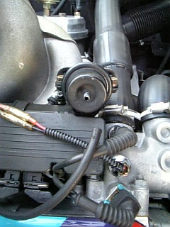
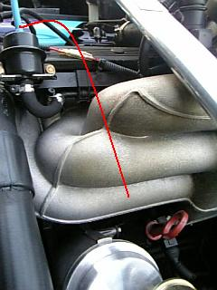
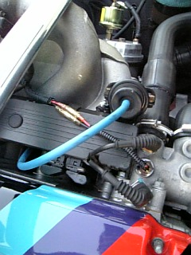
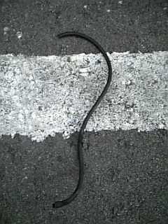

2006/10/27 負圧ﾎｰｽの交換
 熱で劣化していて、触ると取れてしまいました。。 |
 イメージとしては、こんな感じで通っています。下側は手探りでの作業です。 アッパーホース側から手を入れると作業しやすい＾＾ |
 １回目は、ホースの選択に失敗しました。。 シリコンホースのほうが耐久性があります。（2008/1月 2回目の交換）
|
 交換したホースは、触ると崩れてしまうほどにまで劣化＾＾； |